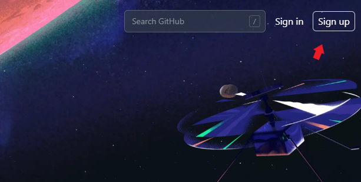
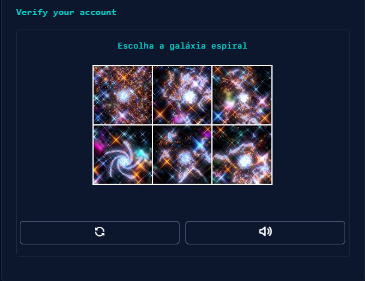
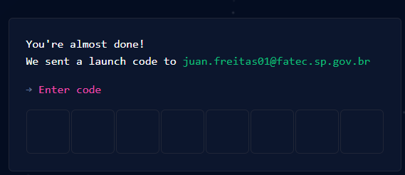
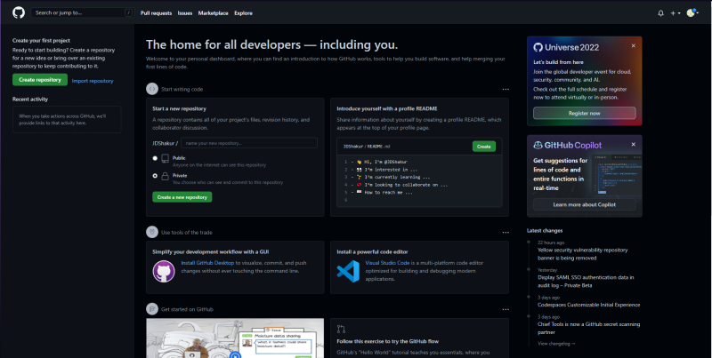

Criando uma conta GitHub
Primeiro devemos acessar o site da GitHub e clicar em Sing Up
Depois de clicar em sign in,devemos informar um e-mail válido,uma senha,nome de usuário
e informar se queremos receber notificações da git pelo e-mail
Depois disso o git pede para que façamos uma verificação simples
Appós confirmar a verificação,você digitará o código que você recebeu em seu e-mail nessa caixa
Pronto! só clicar em "Open GitHub" para ter acesso ao Git, e usufruir de seus serviços 😉
